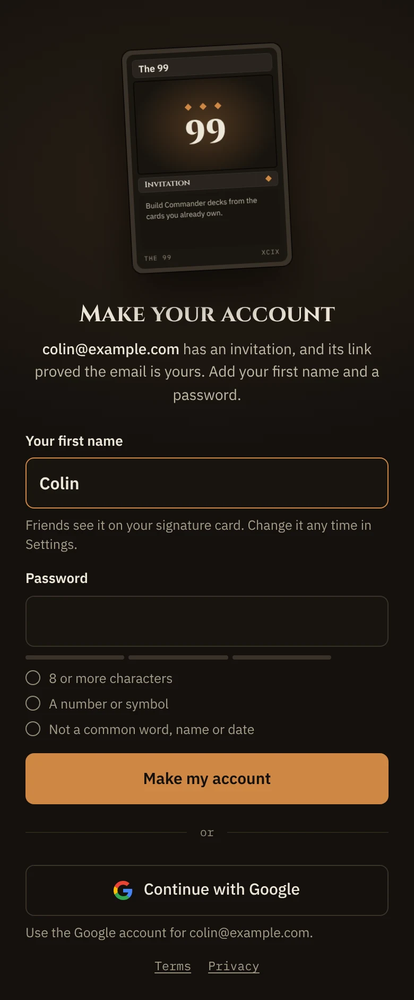
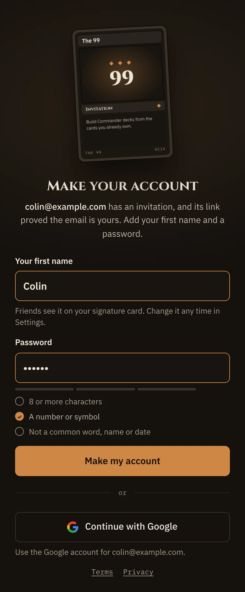
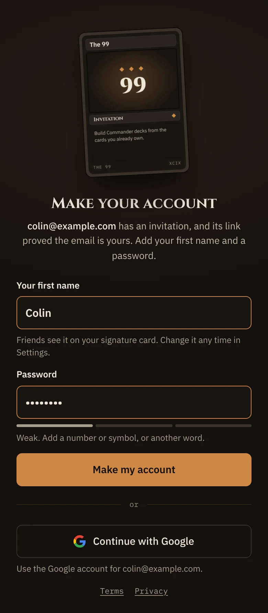
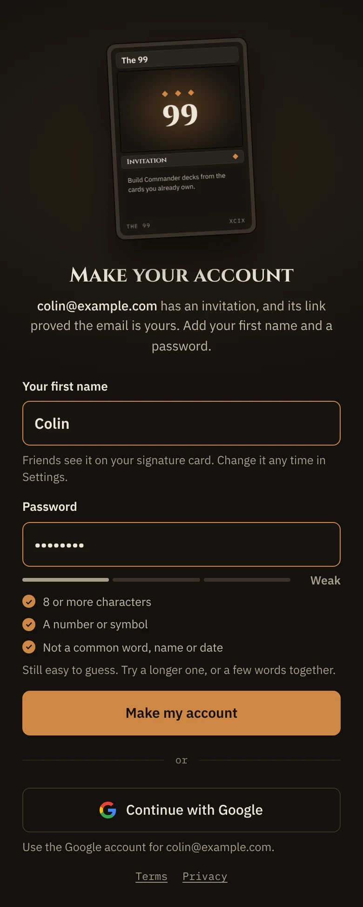
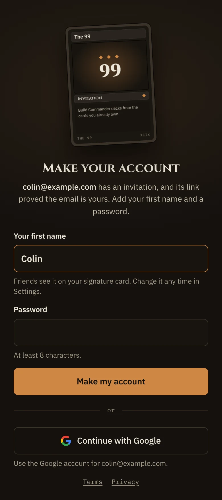

Q1 · Make your account: a meter, and three guides from the empty field
R1c (Hugh: give players something visual out of the gate). Under Password sit a three-segment meter with its word and three guides that tick as the player types: 8 or more characters, A number or symbol, Not a common word, name or date. They replace At least 8 characters. The guides are help. The meter (an estimator that agrees with Clerk) and Clerk on the press are the judges. Every frame is the shipped sign-up rendered with the shipped CSS (Low Sun). Copy is DRAFT for /copy-review.
While typing

Before any typing. The three guides show from the start, so the player knows what's asked before the first key. The meter sits empty above them. Nothing moves when typing starts.

colin9. The guides tick live from the first key: A number or symbol is done. There's no word on the meter yet, because nothing is judged under 8.

colinmtg. One segment and Weak in quiet ink, never --danger. The two open guides say what to change.

Clerk level 2 passes. All three ticked, two segments and Good in --accent. It makes no breach claim.

copper fox casts ninety. Strong with no number or symbol. The guides are help, not rules, and the meter is the judge. That's why a missing tick never blocks the press.
Weak, and which guide is open

password1. Two ticks, but Not a common word, name or date stays open. This is the guide that catches what a number or symbol can't fix.

colin1994. The same open guide. A name and a year read as common to Clerk too.

Kq#7mzpa. The rare case where every guide is met and the estimator still says weak. One extra line appears under the guides: Still easy to guess. Try a longer one, or a few words together.
After the press (Clerk is the judge)

Pressed under 8. The shipped line goes under the meter, in the same slot as today, with the danger edge. The meter empties, and the guides stay under the line, so what to change is still in view.

Clerk's answer wins. The shipped refusal, and the open guides beneath it show what to fix. The next keystroke clears it, as today.

Only the press can know. Every guide was ticked and it read Good. Clerk's breach line takes the slot and the meter empties, so nothing on screen still reads as good. The ticks stay, because they are still true.

What ships now. The hint alone, with no meter. A weak password is only found out after the press.